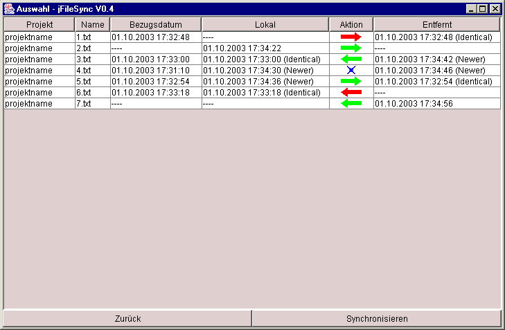

[Forté Agent Tools]
[JHEditor]
[Direct Socket Control]
[JFileSync]
[SMsoft main page]
[Older tools]
|
[News]
[Newsletters]
JFileSync
JFileSync (V0.5, Download, 53 KB)
JFileSync synchronizes the contents of multiple directory pairs. The
contents after the last sync of that directory are stores in a text
file and changes on either side (create, modify, delete) are
synchronized to the other side. After the directory selection (which
can be saved) a table is displayed showing all actions necessary to
get the directories synchronous again. If the action is "clear" (as
the file has only changed in one of the directories) it is
preselected. Otherwise the user may decide how to handle this
file. After confirming that table all actions are processed. If
actions remain (e. g. the directories changed while synchronization),
they are displayed again.

Java Runtime Environment (Download)
This program requires a Java Runtime Environment 1.5 or
higher.
Contact me
You can contact me at sm-soft@gmx.de.
If you want to see my other programs, visit
http://smsoft.ixy.de/
Michael Schierl, Ignaz-Baldauf-Str. 5, D-86551
Aichach, Germany